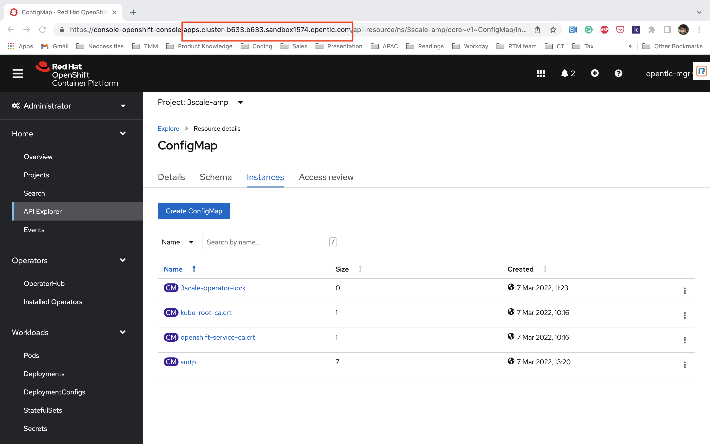

Setup
Prerequisties
3scale requires a RWX storage for the developer portal. We will leverage the OpenShift Data Foundation for this. The OpenShift Data Foundation needs atleast 3 worker nodes (is they are not configured on your cluster already, please follow the below steps)
Increase Worker Node Count
-
On your OpenShift Console UI, navigate to Administrator > Compute > Machine Sets and increase the machine count to 3 as shown below

-
Give it a few seconds to confirm the node is up and running
Ideally all this stuff would be setup during the configuration of your OpenShift Cluster. For the purpose of this demo we are just building things from ground up |
ODF Installation
The whole lab is going to leverage Operators for installation of all the components. Users can configure the operators either via cli or console.
-
On your OpenShift Console UI, navigate to Administrator > Operators > OperatorHub and search for OpenShift Data Foundation. Leave all the values as Default and click on install.

The operator installation might take a minute or two
-
Wait for the operator to install and when you see the below screen, click on Create StorageSystem
-
Make sure the gp2 StorageClass is selected and click Next
-
Select all the three nodes and leave all the other values as default. Click Next
-
Leave all the values as default. Click Next
-
Click on Create StorageSystem
3scale Installation
-
Create a 3scale namespace on your OpenShift Cluster. Navigate to Administrator > Project > Create Project. Type 3scale as the name of the project and create.
-
On your OpenShift Console UI, navigate to Administrator > Operators > OperatorHub and search for 3scale. Select the Red Hat Integration Operator - 3scale. Double check and make sure you are in the 3scale namespace while you do this
-
Click on Install
-
Double check and make sure the 3scale namespace is selected. Leave all the options as default and click Install
-
Once the installation is complete (will take a few seconds). Click on View Operator
-
Now let’s create the API manager. Deploying the APIManager custom resource will make the operator begin processing and will deploy a 3scale solution from it.
-
Click on the API Manager tab > Create APIManager > YAML view >. Remove the the existing yaml and copy paste the code provided in step 3 as shown below
apiVersion: apps.3scale.net/v1alpha1 kind: APIManager metadata: name: 3scale spec: system: fileStorage: persistentVolumeClaim: storageClassName: ocs-storagecluster-cephfs redisResources: limits: memory: 6Gi backend: redisResources: limits: memory: 6Gi wildcardDomain: <insert wildcard domain>You can find the cluster wildcard url dns of your OpenShift cluster from the Console URL. Replace the <insert wildcard domain> with it. Be sure to remove the placeholder marks for your parameters:
< >. Also make a note of the cluster wildcard url as it’ll be useful later
Illustration of the above process

After completion please proceed to the next section: Service Mesh Installation